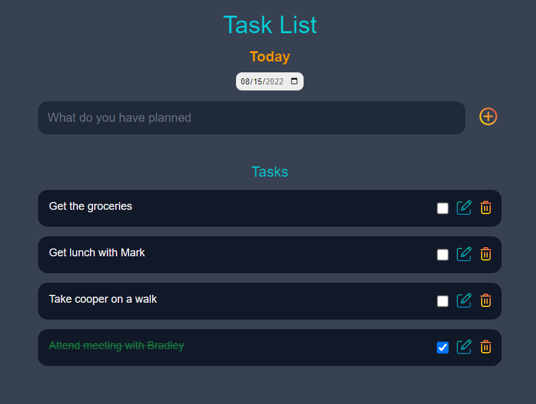
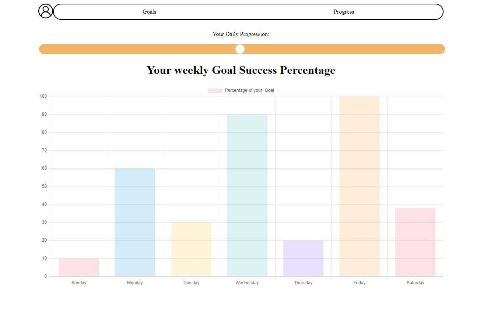

How we help you stay focused

A table of tasks at your hands
Use our task list to help you get organized on a daily basis. Check off tasks, edit, and delete them to keep track of your objectives.

Track your progress over time
Our progression page lets you see your progress for today, as well as your progress throughout the week. Chronos allows you to see the bigger picture


Motivation built in
Earn badges as you progress and complete your goals. We want you to stay motivated, and badges can give you a sense of "levelling up" that you need.